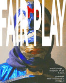

Araceli Zuniga: Fair Play
Fair Play opening reception 3/6/36 6-9pm.
Fair Play is a solo by Araceli Zuniga.
Araceli Zuniga is a Mexican-American artist based in the midwest whose work is defined by intimacy and play. Through expansive materiality, Zuniga uses child-like qualities to encourage a reflective process as a mediation between self and others.
The foundation of Araceli Zuniga’s work is rooted in child-like expression while they interrogate their most personal circumstances. Currently, Zuniga looks to nationalism as a reinforcement of selfhood.
Cheapened symbols of freedom and rivalry have limited the parameters of who we are and what we may become. These themes are emulated in the imagery of eagles and lucha libre. Despite being commodified into the world of kitsch, Zuniga reaches down to the origin stories of both icons in search of sincerity.